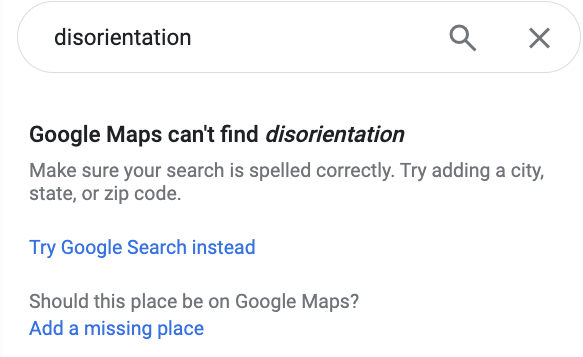

DIFFRACTION
Waves are all around in the form of water, sound vibrations, and electromagnetic radiation. The colors humans can see comprise a small portion of electromagnetic radiation on the electromagnetic spectrum, which ranges from radio waves with the longest wavelength on one end to gamma ray waves with the shortest wavelength on the other. A microwave appliance heats your food in minutes or less by radiating microwaves - whose wavelength is 100,000 times shorter than a radio waves, yet still 20,000 times greater than visible-to-humans light - into the food, exciting its molecules whose vibration results in heat. The spectrum of visible-to-human light ranges from red, whose wavelength is the longest, to violet, whose wavelength is the shortest. Though bees cannot see red, they can see ultraviolet light, which is just beyond the violet perceptible to humans. In my highschool freshman year environmental science class I had a wonderful teacher who explained how scientists can tell whether a star is moving towards us or away from us by the color of light it appears to be emitting. Similar to the Doppler effect characteristic of siren wails, when a star is moving towards us/Earth/the instrument of investigation, the electromagnetic radiation it is emitting becomes "scrunched up" in front of it, decreasing the wavelengths so that the visible light being emitted appears blue to the human eye. This is known as blueshift. On the other hand, when a star is moving away from us/Earth/the instrument of investigation, the electromagnetic radiation behind it becomes more and more "stretched out" and so what visible light is being emitted appears red to the human eye. This is known as redshift. In biology the following year I learned that plant leaves look green because in the process of photosynthesis, where light, water, and carbon dioxide are transformed into sugar and oxygen within plant cells, the wavelengths of light responsible for the visible colors red and blue are absorbed whilst those of green and yellow-green are reflected. This is all to say waves are all around, effecting what you can see, feel, and hear.
When two or more waves occupy the same space in time they are said to be superpositioned. Superpositioned waves do not oppose one another but interfere, their displacements combining to produce a new wave. Constructive interference occurs when superpositioned waves are in phase with one another, meaning the crests and troughs of all waves align. Destructive interference occurs when superpositioned waves are out of phase, when crests from one wave align with troughs of another for example. The patterning of interference is called a diffraction pattern. Particles, because they occupy distinct positions in space and time, cannot therefore produce diffraction patterns. Only waves produce diffraction patterns because only waves can spread across space and time.
[diagram]
Sometime in early pandemic quarantine, I performed a diffraction experiment of my own in a pitch-black bathroom for my undergraduate physics course. The medium of inquiry was not water, however, but light. Using a laser pointer, I sent a beam of light through a piece of tinfoil with two razor-thin slits next to one another, both vertical and parallel to one another. On the wall beyond, a pattern of alternating bright and dark stripes appeared. I have recreated the set-up and detailed the experiment below.
[→with diagram of setup, images, and sketch of waves ]
Passing through the tinfoil, the laster beam is bifurcated by the double slit and spreads out as it emanates from both openings. What is rendered visible on the wall beyond is a diffraction pattern marking the effects of the interference of these two waves of light. The bright stripes on the wall mark where constructive interference occurred, constituting a new wave whose heightened amplitudes effected a brighter light. The dark stripes mark the effect of destructive interference, where superpositioned waves were out of phase, effectively canceling each other out to produce no light at all.
The observation of bright and dark stripes - kindly captured in my recreation by my partner - was worth the postage required to ship DIY kits across the country to quarantined undergraduate students because it illuminated light behaving as a wave. Light can also behave as a (subatomic) particle. A photon is a discreet physical quantity, or quantum, of the electromagnetic field; a photon is a quantum of light (Barad 2015, 395). While light may behave as both wave and particle, it cannot be apprehended behaving as both at once. That is to say, wave and particle are superpositioned states. The first double-slit diffraction experiment was conducted by Thomas Young in 1801, and has since been employed to explore such quantum entanglements as the wave-particle duality of matter.
With this page, I introduce diffraction as a way to figure what is rendered of an interference practice such as deep mapping. I offer my first iteration at a theory of deep mapping, and situate my subsequent and current theorization within the Baradian framework my thinking is iteratively diffracted through. Because I have limited space and time - constrained as I am by the length and requirements of this degree project - I restrain myself from giving as in-depth an account of what I've learned as I would like - focusing rather on providing clarity and context to my arguments. Towards the end of the page I do, however, indulge in a speculative diffractive reading.
MAPPING INTERFERENCE
Deep mapping disorients representationalist dualisms by assuming the field of encounter as interlocutor. In both deep mapping (practice) and making space for deep mapping (rendering), I aim to produce ‘situated knowledges’ wherein the object of knowledge is engaged as actor and agent (Haraway 1988, 592). Yet objects are not preexisting entities but “boundary projects” whose “boundaries are drawn by mapping practices” (Haraway 1988, 595). Recall the cartography assignment introduced in disorientation.html. Not only did tracing a map stand in place of spatial practice, the traced map stood in place of the map making practices which constituted it. The course assignment recommended a source statement of “Google Maps”, effectively erasing the illustration software with which the map was created, the computers on which the software ran, the internet connection and browsers which rendered Google Maps visible to screenshot, the lab instructions, my own directives and acquired technical expertise as course TA… in short, the entire apparatus of the map’s production. Thus, the assignment irresponsibly reproduced a “gaze from nowhere” (Haraway 1988, 581) whereby the producers of geographic knowledge (in this case, the mappers) remained unimplicated in, and therefore unaccountable to, the boundary drawing practices entailed in rendering an object of knowledge (in this case, a place).
In a shift away from geometric optics' visual metaphors that privilege a “fixed position,” Haraway (1991, 70) suggests diffraction. She writes, “diffraction is a mapping of interference, not of replication, reflection, or reproduction. A diffraction pattern does not map where differences appear, but rather maps where the effects of difference appear” (Haraway 1991, 70, emphasis in original). Encountering the effects of interference actually led to my first iteration at a theory of deep mapping. The following is from January 2022, my first winter in Vancouver.
Some grey day I walked the stretch of shoreline that wraps around the University of British Columbia. With the Salish Sea on one side and a forest of evergreens and sword ferns to the other, campus is geographically and administratively separated from the City of Vancouver. It also occupies the traditional, ancestral, unceded territory of the xʷməθkʷəy̓əm (Musqueam) people. A five minute walk from the Geography Department takes me to a zig-zag staircase at the bottom of which awaits a place where clothing is optional. My shoes and socks are the first to come off. The sand is cold and firm, yet porous. It holds the impression of my soles and reshapes in my hands. I contain it for a moment, appreciating its texture, then let it go.
Sunshine was a precious thing my first winter in Vancouver when it rained for four months straight. The cloud cover was so dense that a dimple of white was the only indication our star remained. Monochrome days used to really kill my vibe. There is a dullness to a landscape lit ambiently, a non-differentiation that makes it difficult to articulate thoughts. That day I paused at ocean’s edge where barnacles encrust the rocks and molluscs cling together in crunchy bundles. In and out rolled the waves, and I breathed with them. On each exhale I noticed how foam gathered around the rocks at my feet, forming bubbles on whose surface spun psychedelic spirals.
This happens due to thin film interference, where light waves reflecting off the surface of a bubble overlap with waves which have been transmitted through the film, reflected back, and refracted at the surface at the angle of incidence. When refracted waves are shifted so as to be in-synch with those reflected, they interfere constructively to make visible an abundance of colors. Deep mapping is constructive interference with the superficial reflection that is place rendered (down from above) by flat maps. It's a multidimensional praxis of inhabitation. Mapping deeply requires entering the landscape––putting one’s self into the field––and emerging to render a cartography beyond the monochrome.
January 2022
While walking False Creek that winter, I shared this idea with an interlocutor who recommended I read the above Haraway (1991) on diffraction. The limitation of geometric optics and its attendant reflections is further elaborated by Karen Barad (2003; 2007), who explains how diffraction can only be understood using physical optics. Importantly, whereas geometric optics relies on classical (Newtownian) physics, physical optics are explained using quantum physics. Unlike classical physics, quantum physics allows for superpositions, for entangled states. [I have whole bit on reflexivity critiques I could put here but will take time to develop so bracketing for now] What is needed to produce 'situated knowledges' (Haraway 1988) (of the place one inhabits) is not reflexivity on the part of the researcher, or an merely an approach which counters the hegemonic one, but an account of how differences come to matter as the effect of boundary making practices.
In Meeting the Universe Halfway: Quantum Physics and the Entanglement of Matter and Meaning (2007), Barad attends to this by "building diffractive apparatuses to study the entangled effects differences make" (73). Barad conducts a close reading of Niels Bohr's philosophy-physics to illuminate his complementarity relation as explanation for quantum entanglements, particularly the wave-particle duality of matter. Position and momentum, properties of particles and waves respectively, are indeterminate prior to their measurement. It is not that they are uncertain––that they exist but remain unknown due to the act of measurement effecting the recoded value, as Heisenberg's Uncertainty Principle would have it––but that they do not exist to be known before the act of measurement. Barad underlines this shift from epistemic to ontic. Reading Bohr and Foucault through one another, Barad defines apparatuses as ongoing and open-ended material-discursive boundary making practices which resolve the indeterminacy of a property by performing an "agential cut" whereby the "agencies of observation" and "object of observation" are differentially articulated. "Agencies of observation" and "object of observation" are provisional configurations––entangled states which "intra-actively" mark (mutually constitute) one another within and as part of phenomena. Within the double-slit diffraction experiment recreated above, myself equipped with practical knowledge of the experimental setup and interpretation, as well as the laser, camera, tinfoil, Exacto knife, and binder clamps are marked as "agencies of observation" by the boundary making practice, or apparatus, through which the diffraction pattern is produced as an "object of observation". According to Barad's agential realism, "measured properties refer to phenomena…" (Barad 2007, 197, emphasis in original). Wave and particle are therefore phenomena within which momentum and position are made differentially determinate through apparatuses that constitute the mutually exclusive conditions for either property to become intelligible.
INTRA-ACTIVE KNOWLEDGE PRODUCTION
In Meeting the Universe Halfway (2007), Barad formulates an understanding of diffraction through the steady conceptual of differential intra-action. Barad intentionally uses the term 'intra-action' rather than interaction, a manner of speech that matters in the enunciation of worlds etc. They write:
The notion of intra-action (in contrast to the usual 'interaction,' which presumes the prior existence of independent entities or relata) represents a profound conceptual shift. It is through specific agential intra-actions that the boundaries and properties of the components of phenomenon become determinate and that particular concepts (that is, particular material articulations of the world) become meaningful. Intra-actions include the larger material arrangement (i.e., set of material practices) that effects an agential cut between 'subject' and 'object' (in contrast to the more familiar Cartesian cut which takes its distinction for granted). That is, the agential cut enacts a resolution within the phenomenon of the inherent ontological (and semantic) indeterminacy. (Barad 2007, 139, emphasis in original)
have yet to finish this section
how this relates to deep mapping → exploration → two critiques of embodied sensory methods - body inside and outside- cant be; body presupposed form.
>field/researcher (what is objects and agencies predetermined (place dialogue, cheng yi'en, performative counter practice pieces) )
>human/nonhuman (sensory methods (imaginative ethnographies, roberts, maybe spatz) )
DIFFRACTIVE READING
My fieldsite cannot be instantaneously apprehended as the nominal City, nor can it be captured by the frame of a single map. Neither has one disciplinary framework or methodology been sufficient: each time I leave home I bring along an assortment of people/stories/theories I wish to think with for the day. I put them into conversation first amongst themselves. Heavy in my bag, their pages interlap, folding together like a pair of hands. Opening one, I open myself: Read me
Intro to diffractive reading etc.
overlaying frameworks, intertextuality, diffractive reading
Reading Barad (2007) and de Certeau (1984) through one another, I believe place and space to be phenomenal expressions of the world differentially articulated through trace and practice.
TRACE AND PRACTICE
We live in a moment where locative technology is ubiquitous. Becoming lost no longer requires going out of one's way. Instead, "disoriented discovery" (Kurgan 2013) begins with a choice to not reference Google Maps, to turn location off and allow position to remain indeterminate. Reading Barad (2007) and de Certeau (1984) through one another, I believe place and space to be phenomenal expressions of the world differentially articulated through trace and practice. I am particularly interested in how pedestrian tracings of Google Maps––a locative technology which renders the city down from above as a place––inform everyday navigations and thus the production of (urban) space. While I leave more rigorous investigation to my PhD, I want to sketch out some Ideas as they are inspired by this project and supported by my theoretical and practical investigations so far.
In The Practice of Everyday Life (1984), Michel de Certeau relationally articulates space and place with the following: "space is a practiced place” (117, emphasis in original). He writes,
Site 2 de Certeau, Michel. 1984. The Practice of Everyday Life. Translated by Steven Rendall. Berkeley: University of California Press.
Google’s map of Vancouver abides by the law of the “proper”. It produces the city as a place wherein each element has a distinct location. Position is made determinate by a spatial configuration which “excludes the possibility of two things being in the same location (place)” (de Certeau 1984, 117, emphasis in original). Such a static coordination allows for navigation to be routed (by Google) from one element to another. The navigational possibilities, however, remain determined (and constrained) by the law whose logic governs the map: follow streets, not alleys; walk on sidewalks; don’t jay-walk; turn right here, not at the next block. Disorientation is a destination not found by Google Maps, which asks in response, "Should this place be on Google Maps?" (“Google Maps” n.d.).

Site 3Screenshot of Google Maps search for 'disorientation'. Click here for search.
Yet de Certeau contends it is pedestrian movements that spatialize the city, writing, “space is composed of intersections of mobile elements…space occurs as the effect produced by the operations that orient it, situate it, temporalize it…” (1984, 117). While urban geographers and planners may theorize and design the city, urban space is produced through everyday navigations and encounters. If the apprehension of place renders position determinate, the motion that spatializes renders position indeterminate: “to walk is to lack a place” (de Certeau 1984, 103). Google Maps imposes the law of the “proper” upon navigation by substituting “a mark in place of acts, a relic in place of performances: it is only their remainder, the sign of their erasure” (de Certeau 1984, 35, emphasis in original).
Tracing as placing… argument...
trace and practice agencies of observation (but also apparatuses of investigation?) constituting objects of observation 'place' and 'space', analogous to the entangled states of particle and wave, themselves phenomenon within which position and momentum are respectively produced as objects of observation.
place is phenomenon within which objects of observation is position
trace is apparatus of investigation - boundary making practice - which produces place as object of observation and cartographer-geographer-researcher as agencies of observation
practices is apparatus of investigation which produces space as object of investigation and
through momentum being determinate
need to finish this part as well
DIFFRACTION PATTERNS
Deep mapping does not render down to a map in the sense of a Cartesian cartography, where action is made legible by the substitution of trace for practice (de Certeau 1984, 97). Yet neither does it ‘counter cartography’ (c.f. Mason-Deese 2020). Remember that in my theorization, articulated through practice, deep mapping is not defined by opposition so much as marked through iterative acts of interference with hegemonic forms of representing place, producing geographic knowledge, and rendering spatial research. Understood thus, deep mapping is not a methodology but a open-ended and ongoing boundary making practice––a Baradian diffractive apparatus for generating interferences and studying how the effects of difference, marked by diffraction patterns, come to matter (Barad 2007). Deep mapping is an approach to representing place, producing geographic knowledge, and rendering spatial research which recognizes, as Barad does, that “knowing, thinking, measuring, theorizing, and observing are material practices of intra-acting within and as part of the world” (2007, 90). It is through the effects of practicing deep mapping that deep mapping becomes articulated as an apparatus of investigation. At times a site of interference, at times a tactic, deep mapping has proved for me a means to study the entangled states of limit and transgression.
Defining thesis, Rendering theory = marking the effects of a practice → Rendering is a boundary making practice → Negative-spaces is a diffraction pattern marking the effects of an interference practice, itself a diffractive apparatus. It is through the effects of practicing deep mapping that deep mapping becomes articulated as an apparatus of investigation. How, then, might the effect of interferences be marked while accounting for the apparatus of their production? My thesis is an attempt to account for the practice of deep mapping through which my theorization is articulated, as well as the mapping practices entailed in rendering negative-spaces as an object of knowledge. With the following page, rendering.html, I ….
The banner photograph for this page is that of a beach at low tide. Specifically, it is one beach I used to come to when I lived in Dunbar, riding my bike down a steep hill to sit in silence in the evening. I also took many an after zoom-class walk here with an interlocutor who used to live nearby and whose home I would tune in from.
I went down to spanish banks
at low tide and found the sand
exposed like infinite ribs.
I gathered myself beside
shallow ponds of ocean
and felt the throb of tanker
engines with my fingers.
A man gave me his fire and
a stranger, some wood.
I watched them consume
each other feeling warmed
by the kindness of people
I'd never know.
NOT FINAL
27 Inteference & Diffraction - Thin Film Interference, 2016. https://www.youtube.com/watch?v=vxh0yjw4Z8I.
Barad, Karen. Meeting the Universe Halfway: Quantum Physics and the Entanglement of Matter and Meaning. Durham, NC: Duke University Press, 2007.
Haraway, Donna. “The Promises of Monsters: A Regenerative Politics for Inappropriate/d Others.” In The Monster Theory Reader, edited by Jeffrey Andrew Weinstock, 459–521. University of Minnesota Press, 2020.
Haraway, Donna J. In Modest_Witness@Second_Millennium. FemaleMan_Meets_OncoMouse: Feminism and Technoscience, 2nd ed. Second edition. | New York, NY : Routledge, 2018. | The title is an email: Routledge, 2018.
Loveless, Natalie. How to Make Art at the End of the World: A Manifesto for Research-Creation. Duke University Press, 2019.
Mason-Deese, Liz. “Countermapping.” International Encyclopedia of Human Geography, 2020, 423–32.
Wilson, Helen F. “On Geography and Encounter: Bodies, Borders, and Difference.” Progress in Human Geography 41, no. 4 (August 1, 2017): 451–71. https://doi.org/10.1177/0309132516645958.